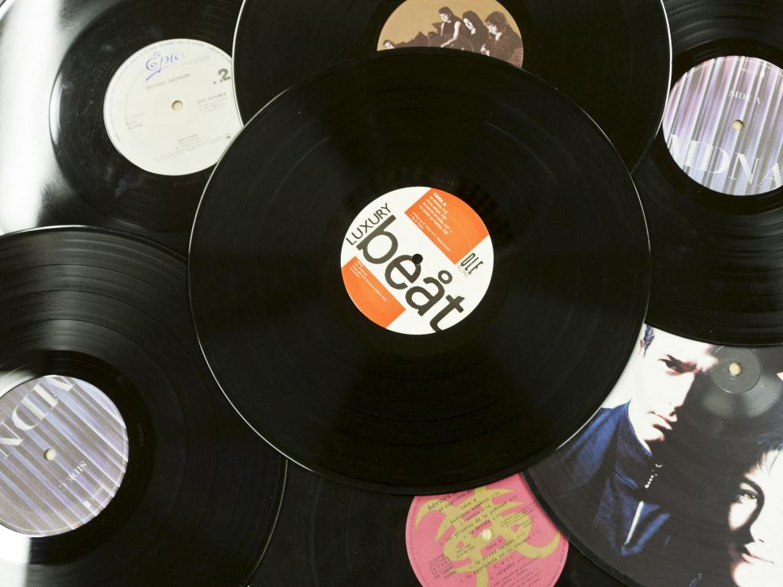

Introducción
Si hay una década que marcó sobremanera la historia de la música, esta es, sin lugar a dudas, la música de los 80. De hecho, ya en los 70 empezaron a surgir una gran cantidad de bandas de música rock que comenzaron a acaparar las listas de ventas y crearon, así, un nuevo panorama musical y cultural que rompía con las tendencias anteriores.
Para comenzar necesitamos saber ¿Qué es el rock? El Rock es un vocablo inglés que hace referencia a un género musical de ritmo muy marcado, nacido a partir de la fusión de varios estilos del folclore estadounidense y popularizado desde de la década de 1950; en la actualidad, suele utilizarse el término rock para nombrar a los estilos modernos derivados del rock and roll, quedando éste último concepto para designar al ritmo original que surgió en los ’50.
Hay varias bandas y cantantes muy destacados en esta época que mencionaremos a continuación:
|
||||